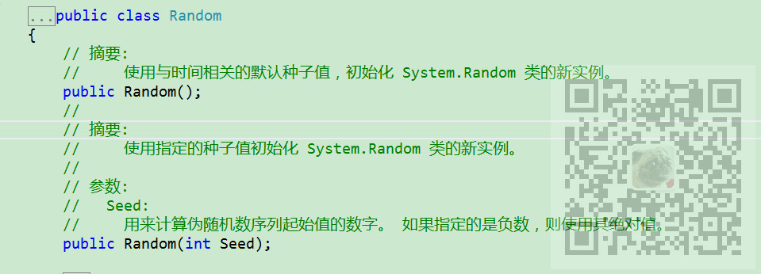

原文出处:本文由博客园博主霸道流氓提供。
原文连接:https://www.cnblogs.com/badaoliumangqizhi/p/11840712.html
原文连接:https://www.cnblogs.com/badaoliumangqizhi/p/11840712.html
场景
在循环中使用
Random y = new Random();
生成随机数时每次循环生成的数是一样的。
for (int i = 1; i < 20000;i++ )
{
Random y = new Random();
PointPairList list1 = new PointPairList();
for (int j = 0; j < 50; j++)
{
double x = j;
double y1 = y.NextDouble() * 1000;
list1.Add(x, y1); //添加一组数据
}
LineItem myCurve = myPane.AddCurve("曲线"+i, list1, Color.Red, SymbolType.None);
}
想要每次循环生成不一样的随机数。
实现
可以查看Random的定义

除了使用默认的Random()构造方法，还可以使用指定的种子值初始化 System.Random 类的新实例。
for (int i = 1; i < 20000;i++ )
{
Random y = new Random(Guid.NewGuid().GetHashCode());
PointPairList list1 = new PointPairList();
for (int j = 0; j < 50; j++)
{
double x = j;
double y1 = y.NextDouble() * 1000;
list1.Add(x, y1); //添加一组数据
}
LineItem myCurve = myPane.AddCurve("曲线"+i, list1, Color.Red, SymbolType.None);
}